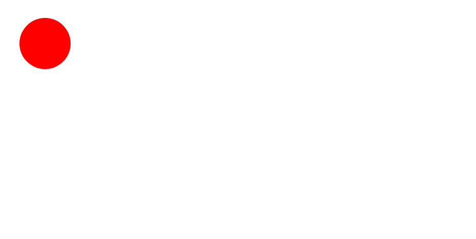

SVG
Рисование фигур
SVG означает S Scalable V Vector G Graphics, и используется для рисования фигур с помощью HTML разметки.
Он предлагает несколько методов для рисования контуров, прямоугольников, кругов, текста и графических изображений.
Первый способ вставить svg-изображение это через тег img
<img src="image.svg" alt="" height="300" />
Второй способ это рисовать фигуры с помощью тегов svg:
<svg width="1500" height="1500"> </svg>
Чтобы создать круг необходимо добавить тег circle.
<svg width="1500" height="1500"> <circle cx="80" cy="80" r="50" fill="red" /> </svg>

Прямоугольник
Для создания прямоугольника нужно прописать следующие инструкции:
<rect width="300" height="100" x="20" y="20" fill="green" />
Важно!
SVG не основан на пикселях, поэтому его можно увеличивать до бесконечности без потери качества.